→ ฝึกกับโจทย์จริง: Solution/Machine/Corn + Rats (Assignment 3 + 9)
Lecture 3 — Regression Diagnostics and Remedies
บทเรียนนี้คือแกนกลางของทักษะที่ 2 ตามที่ระบุไว้ — เช็ค assumption อย่างเป็นระบบ: assumption ไหน คู่กับ diagnostic (plot หรือ test) ตัวไหน, "ผ่าน" หน้าตาเป็นอย่างไรใน output จริง, "พัง" หน้าตาเป็นอย่างไร, และพังแล้วต้องแก้ด้วยวิธีไหน. สไลด์นี้เกือบทั้งหมดเป็น diagnostic plot คู่ pass/fail ที่ครูเตรียมไว้ให้เทียบข้าง ๆ กัน — เราจะอ่านทีละคู่ พร้อมเชื่อมกับ R output จริงทุกจุด.
Residual นิยามจากข้อมูลจริง: \(e_i = Y_i - \hat{Y}_i\) (ค่าจริงลบค่าทำนาย) — ต่างจาก error term ทฤษฎี \(\varepsilon_i\) ที่เป็นส่วนเบี่ยงเบนจากเส้นจริง (ไม่มีใครรู้ค่า \(\beta_0, \beta_1\) จริง). \(e_i\) คำนวณได้จากข้อมูล (observable) ส่วน \(\varepsilon_i\) ไม่มีทางรู้ค่าจริง (unobservable) — diagnostic ทั้งบทนี้ใช้ \(e_i\) เป็นตัวแทนเพื่อ "เดา" ว่า \(\varepsilon_i\) น่าจะมีพฤติกรรมตาม assumption หรือไม่.
Residual มีสมบัติที่ต้องจำ 3 ข้อ: (1) ค่าเฉลี่ยของ residual เป็นศูนย์เป๊ะเสมอ \(\bar{e} = \sum e_i/n = 0\) — เป็นผลจากพีชคณิตของ OLS ไม่ใช่สิ่งที่ต้องเช็ค (2) variance ของ residual ประมาณด้วย \(s^2 = MSE\) (3) residual ไม่เป็นอิสระต่อกันเอง เพราะทุกตัวคำนวณมาจากเส้นถดถอยเส้นเดียวกัน — แต่ถ้า n มากกว่าจำนวนพารามิเตอร์มาก ๆ ผลจากการไม่อิสระนี้เล็กจนละเลยได้ในทางปฏิบัติ.
ข้อสังเกตสำคัญ: เพราะ \(\bar{e}\) เป็นศูนย์เสมอโดยพีชคณิต assumption ข้อ "mean zero" จึงไม่มี diagnostic แยกให้เช็ค — สไลด์จัดกลุ่ม diagnostic เหลือ 4 เรื่องเท่านั้น: linearity, normality, constant variance, independence (การพัง mean-zero ที่แท้จริงจะออกอาการเป็น "pattern" ในกราฟ residual-vs-fitted แทน ซึ่งคือสิ่งที่ linearity check ตรวจอยู่แล้ว).
ก่อนลงรายละเอียดทีละข้อ นี่คือแผนที่รวมทั้งบท — จำตารางนี้ให้ได้ก่อน แล้วค่อยไล่ดูตัวอย่างจริงทีละแถว:
| Assumption | Graphical check | Formal test |
|---|---|---|
| 1. Linearity | Plot X vs Y, และ residuals vs fitted (lack of fit) | — |
| 2. Normality | Normal QQ plot ของ residual | Shapiro-Wilk Test |
| 3. Constant variance | Residuals vs fitted values | Breusch-Pagan Test |
| 4. Independence | Residuals vs time/order | Run Test (cross-sectional) / Durbin-Watson Test (time-series) |
สังเกตว่า residuals-vs-fitted ถูกใช้ตรวจทั้ง linearity และ constant variance พร้อมกัน — สองเรื่องนี้อ่านจากกราฟเดียวกันแต่มองคนละมิติ: linearity ดูว่ามี "โค้ง/แนวโน้ม" หรือไม่ (แกน y เอนไปทางบวกหรือลบเป็นช่วง ๆ), constant variance ดูว่า "ความกว้างของแถบ" คงที่ตลอดแกน x หรือไม่ (บานออกเป็นกรวยหรือเปล่า) — สอบมักถามแยกสองแง่มุมจากภาพเดียวกันนี้ ต้องแยกให้ออก.
สำหรับ formal test ทุกตัวในบทนี้ ทิศทางการอ่านผลเหมือนกันหมด: H₀ คือ "assumption เป็นจริง" (residual is normal / has constant variance / is independent) ดังนั้น ต้องการ p-value สูง (ไม่ปฏิเสธ H₀) — กลับด้านกับการทดสอบ \(H_0: \beta=0\) ในบทก่อนที่อยากปฏิเสธ H₀ ต้องระวังจุดนี้เป็นพิเศษ.
ทำสองอย่าง: (1) plot X vs Y ตรง ๆ ก่อน fit เพื่อดูว่าความสัมพันธ์เป็นเส้นตรงหรือไม่ (2) หลัง fit แล้ว plot residuals vs fitted values เพื่อดู lack of fit — ถ้าโมเดลจับความสัมพันธ์ได้ครบ residual ที่เหลือต้องกระจายแบบสุ่มไม่มีแนวโน้ม:
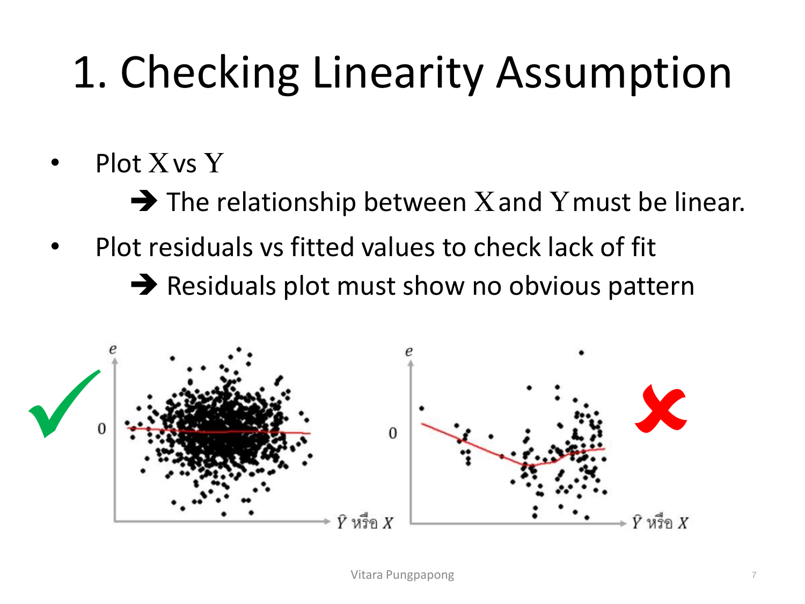
อ่านสองแผงนี้ให้ละเอียด: แผงซ้าย (✓) เส้นสีแดง (smoother/loess) ที่ลากผ่านกลุ่มจุดแทบจะเป็นเส้นตรงราบอยู่ที่ 0 ตลอดช่วงแกน x — จุดกระจายทั้งเหนือและใต้เส้น 0 ในสัดส่วนใกล้เคียงกันทุกช่วง ไม่มี "รูปทรง" ที่มองเห็นได้ด้วยตา นี่คือสิ่งที่ต้องเห็นเมื่อโมเดลเชิงเส้น fit ข้อมูลได้ดี. แผงขวา (✗) เส้นแดงหักโค้งชัดเจน: เริ่มจากค่าบวก ลดฮวบลงต่ำกว่า 0 ในช่วงกลาง แล้วดีดกลับขึ้นมาที่ปลายขวา — รูปตัว U คว่ำ-หงายนี้คือสัญญาณตรงไปตรงมาที่สุดว่าโมเดลเชิงเส้นพลาดความสัมพันธ์ที่แท้จริงซึ่งเป็นเส้นโค้ง (บางทีเรียก "lack of fit").
ตัวอย่างจริงจาก R — plot(fitted(model1), resid(model1)) เทียบกับ built-in plot(model1, 1) (ซึ่งให้ผลเหมือนกันแต่ R เติม label จุดที่ residual ใหญ่ผิดปกติให้อัตโนมัติ):
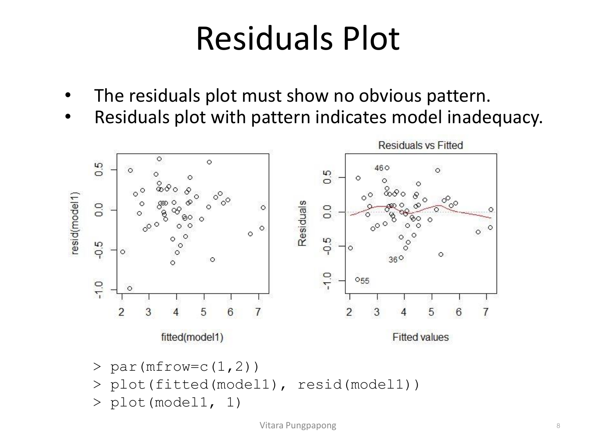
สองแผงนี้เป็นข้อมูลชุดเดียวกัน พล็อตสองวิธี — แผงขวาที่ได้จาก plot(model1,1) มีเส้น smoother สีแดงช่วยตาให้เห็นแนวโน้มชัดขึ้น และ R ติด label จุดที่ 46, 36, 55 อัตโนมัติเพราะเป็นจุดที่ residual ห่างจาก 0 มากที่สุดสามอันดับแรก (นี่ยังไม่ใช่ influence diagnostic เต็มรูปแบบ — แค่ช่วยตาดู อธิบายลึกใน Lecture 4). เส้น smoother ที่นี่ค่อนข้างราบใกล้ 0 ตลอดช่วง มีหยักขึ้นลงเล็กน้อยแต่ไม่ได้โค้งเป็นระบบแบบภาพก่อนหน้า — ตีความได้ว่า linearity assumption ผ่านในระดับที่ยอมรับได้ แม้จะมีจุด outlier 3 จุดที่ยังต้องตรวจสอบต่อ (เรื่อง influence point เต็ม ๆ อยู่ใน Lecture 4).
สองวิธี: Normal QQ plot ของ residual (ต้องเกาะเส้น 45 องศา) และ Shapiro-Wilk Test (\(H_0\): residual แจกแจงปกติ — ต้องไม่ปฏิเสธ H₀ ถึงจะ "ผ่าน"):
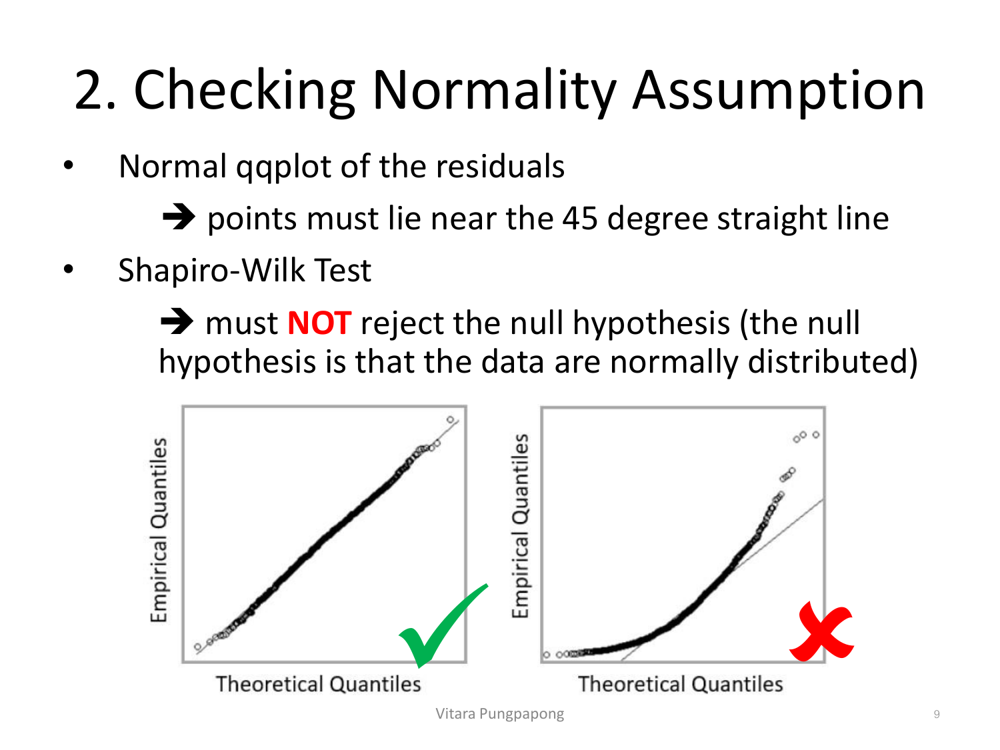
แผงซ้าย (✓): จุดทุกจุดเรียงตัวเป็นเส้นตรงทแยงมุมสม่ำเสมอตั้งแต่มุมล่างซ้ายถึงบนขวา ไม่มีจุดไหนหลุดออกจากแนว — สรุปว่า empirical quantile กับ theoretical quantile (จากการแจกแจงปกติ) ตรงกันตลอดช่วง = residual แจกแจงแบบปกติ. แผงขวา (✗): ช่วงกลางจุดยังเกาะเส้นได้ดี แต่ที่หางบนขวา จุดหักโค้งชันขึ้นแยกออกจากเส้นตรงอย่างชัดเจน — แปลว่าค่า residual ที่ควรจะมากตามทฤษฎี (theoretical quantile สูง) จริง ๆ แล้วมากกว่านั้นอีก (empirical quantile สูงกว่าที่ทฤษฎีทำนาย) นี่คือลักษณะของการแจกแจงเบ้ขวา (right-skewed) หรือมี outlier ที่หางขวา.
Ramsey & Schafer สรุปรูปแบบที่พบบ่อยไว้ 4 แบบ ให้จำรูปทรงเทียบกัน:
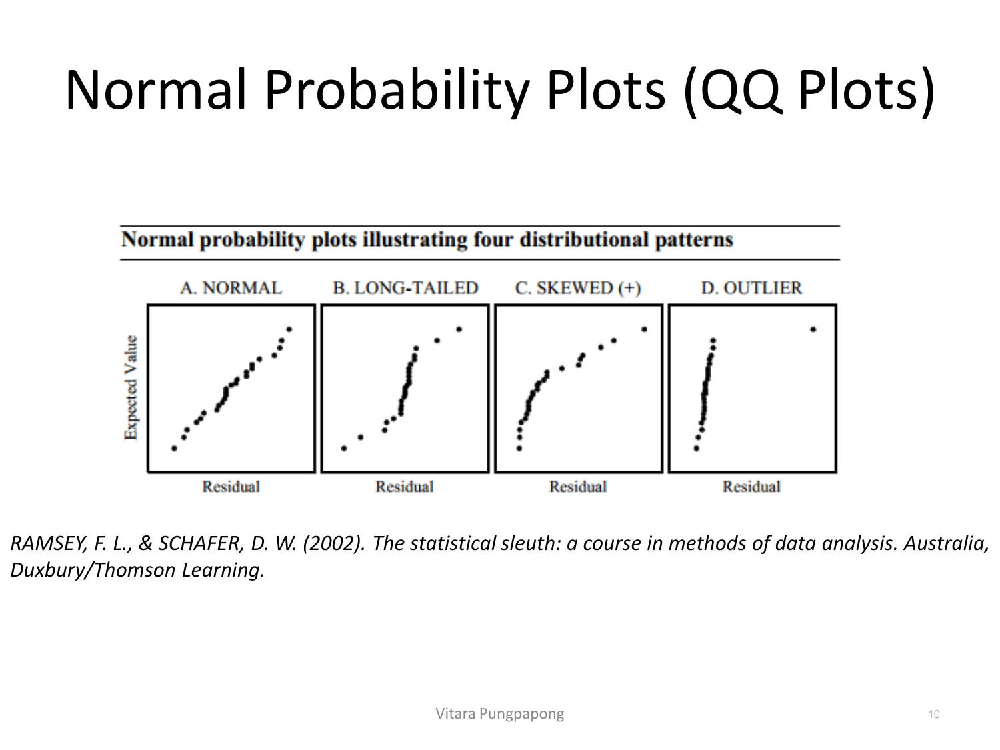
อ่านทีละแบบ: (A) NORMAL — เส้นตรงสม่ำเสมอ ไม่มีอะไรผิดปกติ (มาตรฐานที่ต้องเทียบด้วยทุกครั้ง). (B) LONG-TAILED — จุดโค้งเป็นรูปตัว S: ตรงกลางแบนราบ (จุดกระจุกตัวแน่นกว่าที่ทฤษฎีทำนาย) ส่วนหางทั้งสองข้างชันขึ้น/ลงแรง (หางหนากว่าปกติทั้งสองด้าน) — เป็น distribution ที่มี kurtosis สูง ไม่ใช่แค่เบ้ด้านเดียว. (C) SKEWED (+) — จุดทั้งเส้นโค้งเป็นส่วนโค้งเว้าเดียวตลอด (ไม่ใช่ S-curve) บ่งบอกความเบ้ไปทางบวกอย่างต่อเนื่อง ตรงกับรูปแบบที่เห็นในแผงขวาของภาพก่อนหน้า. (D) OUTLIER — จุดส่วนใหญ่เกาะเส้นตรงได้ดีเกือบทั้งหมด มีเพียงจุดเดียวที่หลุดออกไปไกลจากกลุ่มที่มุมขวาบน — ต่างจาก (B) และ (C) ตรงที่ปัญหาไม่ได้อยู่ที่รูปร่างการแจกแจงโดยรวม แต่อยู่ที่ observation ผิดปกติตัวเดียว (ต้องเช็คว่าเป็น data-entry error หรือ influential point จริงใน Lecture 4).
ผลจริงจาก R บนข้อมูลเดียวกับภาพหน้า 7-8 (model1) — เทียบสองวิธีสร้าง QQ plot ที่ให้ผลเหมือนกัน:
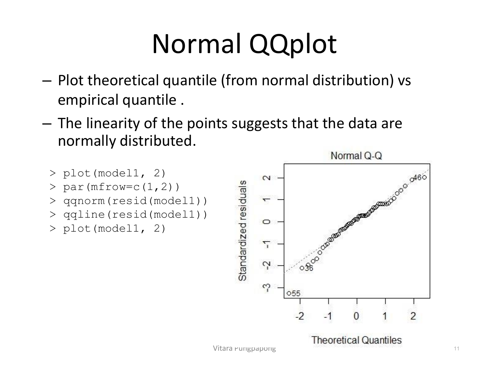
จุดส่วนใหญ่เกาะเส้นประได้ดีตลอดช่วงกลาง (theoretical quantile −1 ถึง 1) — มีจุด 46 ที่ปลายขวาบนกับจุด 36, 55 ที่ปลายซ้ายล่างเบี่ยงออกจากเส้นเล็กน้อย (สังเกตว่าเป็นจุดเดียวกันกับที่ถูก label ไว้ในภาพ residuals-vs-fitted หน้า 8 — จุดที่ residual ใหญ่ผิดปกติในกราฟหนึ่ง มักโผล่มาเป็นจุดเบี่ยงในกราฟ QQ ด้วยเสมอ เพราะเป็นตัวเลขชุดเดียวกัน) รูปแบบนี้ใกล้เคียง (A) NORMAL มากกว่า (B)/(C)/(D) — ยืนยันด้วยผล Shapiro-Wilk ที่ตามมา:
> shapiro.test(resid(model))
Shapiro-Wilk normality test
data: resid(model)
W = 0.96496, p-value = 0.2741p-value = 0.2741 > 0.05 (หรือ α ระดับใดก็ตามที่ใช้ทั่วไป) จึงไม่ปฏิเสธ H₀ — สรุปว่าไม่มีหลักฐานเพียงพอที่จะบอกว่า residual ไม่แจกแจงแบบปกติ ตรงกับสิ่งที่อ่านได้จาก QQ plot พอดี ทั้งสองวิธี (graphical + formal test) ให้ข้อสรุปสอดคล้องกัน.
ใช้กราฟเดียวกับ linearity (residuals vs fitted) แต่มองมิติ "ความกว้างของแถบ" แทน "แนวโน้ม" — และมี Breusch-Pagan Test เป็น formal test (\(H_0\): residual มี variance คงที่):
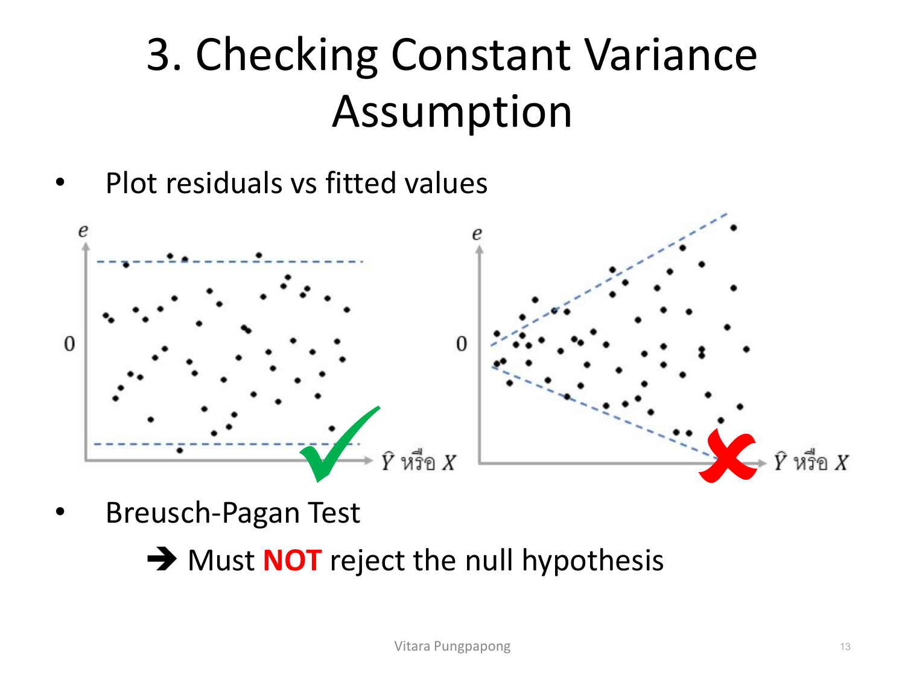
แผงซ้าย (✓): เส้นประบนกับล่างขนานกันตลอดช่วงแกน x — "ความสูง" ของแถบที่จุดกระจายอยู่คงที่ ไม่ว่าจะมองที่ค่า X̂ หรือ X ต่ำหรือสูง นี่คือ homoscedasticity. แผงขวา (✗): เส้นประสองเส้นเริ่มจากจุดแคบ ๆ ทางซ้ายแล้วบานออกเป็นรูปกรวยไปทางขวา — ความกว้างของแถบไม่คงที่ ยิ่งค่า fitted/X มาก residual ยิ่งกระจายกว้าง นี่คือรูปแบบ heteroscedasticity ที่พบบ่อยที่สุด (มักเรียก "megaphone shape" หรือ "fan shape") ซึ่งจะเห็นตัวอย่างจริงในหัวข้อ Weighted Regression ด้านล่าง.
> install.packages('lmtest')
> library(lmtest)
> bptest(model1)
studentized Breusch-Pagan test
data: model1
BP = 7.0918, df = 3, p-value = 0.06903p-value = 0.06903 — ถ้าใช้ α=0.05 ตามธรรมเนียม 0.06903 > 0.05 จึงไม่ปฏิเสธ H₀ สรุปว่า constant variance assumption ผ่าน แต่สังเกตว่า p-value นี้อยู่ใกล้เส้น 0.05 มาก (ต่างจาก Shapiro-Wilk ที่ p=0.2741 ซึ่งผ่านแบบขาดลอย) — ถ้าใช้ α=0.10 แทน จะปฏิเสธ H₀ ทันที นี่คือตัวอย่างที่ดีว่าทำไมข้อสอบมักถามว่า "ที่ระดับนัยสำคัญเท่าไร" กำกับเสมอ ไม่ใช่แค่ถามว่า "ผ่านหรือไม่ผ่าน" เฉย ๆ.
bptest(model1): BP = 7.0918, df = 3, p-value = 0.06903 ถ้าเปลี่ยนระดับนัยสำคัญจาก α=0.05 เป็น α=0.10 ข้อสรุปจะเปลี่ยนไปอย่างไร?ใช้เมื่อสงสัยว่าข้อมูลมี serial correlation (มักเกิดกับข้อมูลที่เก็บตามลำดับเวลาหรือพื้นที่) — สามวิธี: plot residuals vs time/order (ต้องไม่มี pattern), Run Test (สำหรับ cross-sectional data), Durbin-Watson Test (สำหรับ time-series data โดยเฉพาะ):
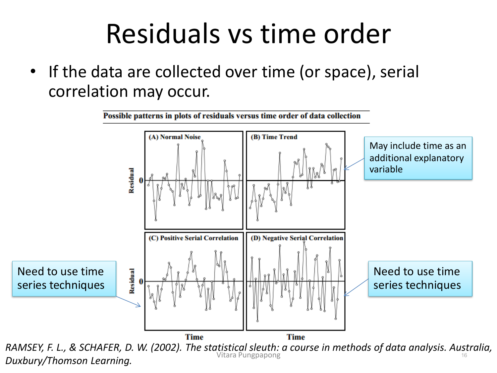
อ่านทีละแบบ: (A) Normal Noise — จุดกระจายสุ่มรอบ 0 ไม่มีรูปแบบ ค่าที่ time ใดค่าหนึ่งไม่บอกอะไรเกี่ยวกับค่าที่ time ถัดไป = ผ่าน. (B) Time Trend — residual ค่อย ๆ ไต่ระดับสูงขึ้นเรื่อย ๆ ตามเวลา (เริ่มจากติดลบ จบที่เป็นบวก) สไลด์แนะนำว่ากรณีนี้อาจแก้ได้ง่าย ๆ โดยใส่ time เป็นตัวแปรอิสระเพิ่มเข้าไปในโมเดล (ไม่ต้องใช้เทคนิค time series เต็มรูปแบบ เพราะรูปแบบนี้คือ deterministic trend ที่จับได้ด้วย regression ธรรมดา). (C) Positive Serial Correlation — จุดแกว่งขึ้นลงเป็นช่วงยาว ๆ ราบเรียบ (ถ้าติดลบคราวนี้ คราวถัดไปมักติดลบต่อ) — ค่าที่ time ใกล้กันมี "ความจำ" กัน. (D) Negative Serial Correlation — จุดสลับบวก-ลบแทบทุกจุดติดกันเป็นซิกแซกถี่ ๆ (ถ้าบวกคราวนี้ คราวถัดไปมักติดลบ) — ทั้ง (C) และ (D) สไลด์ระบุว่าต้องใช้ time series techniquesแก้ (ไม่ใช่แค่เติมตัวแปร time เข้าไปเฉย ๆ เหมือน (B)) เพราะโครงสร้างสหสัมพันธ์อยู่ในตัว error เอง.
ตัวอย่างจริง — ข้อมูล Corn Yield, plot(resid(model)) ให้ผลตาม index ของข้อมูล (แกน x คือลำดับที่เก็บข้อมูล ไม่ใช่ fitted value):
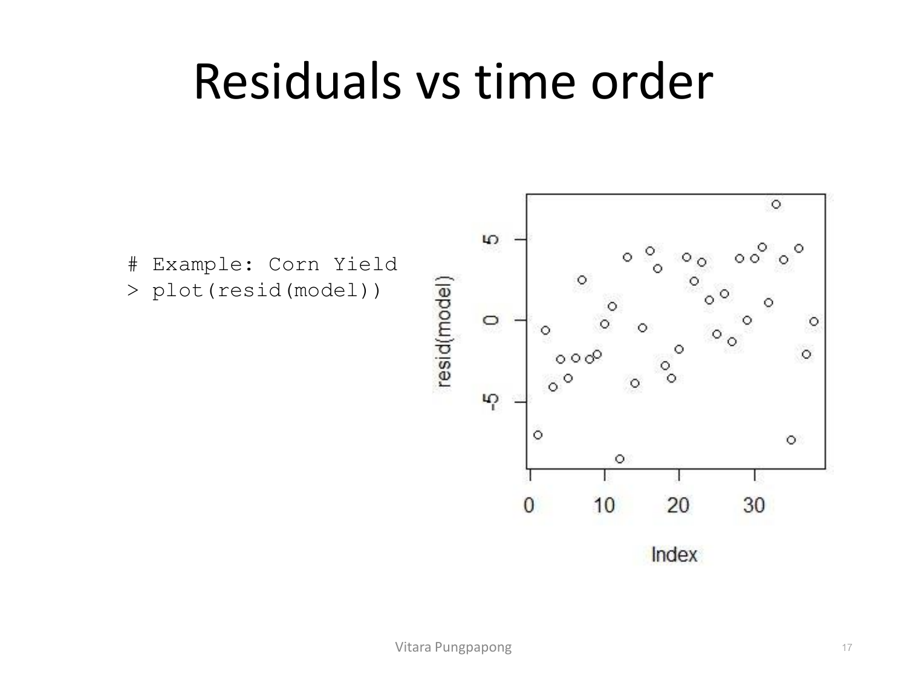
เทียบกับ 4 รูปแบบก่อนหน้า จุดในภาพนี้ใกล้เคียง (A) Normal Noise มากที่สุด — กระจายทั้งบวกลบสลับกันไม่มีจังหวะซ้ำ ไม่มีแนวโน้มขึ้นหรือลงตามลำดับ index — เบื้องต้นดูเหมือนผ่าน independence assumption แต่ต้องยืนยันด้วย formal test เพราะตาเปล่าแยก "สุ่มจริง" กับ "สุ่มปนสหสัมพันธ์อ่อน ๆ" ได้ยาก:
> install.packages('randtests')
> library(randtests)
> runs.test(resid(model))
Runs Test
data: resid(model)
statistic = -0.65784, runs = 18, n1 = 19, n2 = 19,
n = 38, p-value =0.5106
alternative hypothesis:nonrandomnessRun Test นับจำนวนช่วง (runs) ของเครื่องหมายบวก/ลบติดกัน — ได้ 18 runs จาก n=38 จุด (n1=19 บวก, n2=19 ลบ) p-value = 0.5106 > 0.05 ไม่ปฏิเสธ H₀ ยืนยันว่า residual สุ่มจริง ไม่มี pattern แอบแฝง.
> dwtest(model)
Durbin-Watson test
data: model
DW = 1.9589, p-value = 0.4443
alternative hypothesis: true autocorrelation is
greater than 0Durbin-Watson statistic มีค่าระหว่าง 0–4 โดย DW ≈ 2 แปลว่าไม่มี autocorrelation (DW เข้าใกล้ 0 = positive autocorrelation แรง, DW เข้าใกล้ 4 = negative autocorrelation แรง) — ที่นี่ DW=1.9589 ใกล้ 2 มาก และ p-value=0.4443 > 0.05 จึงไม่ปฏิเสธ H₀ เช่นกัน ทั้ง 3 วิธี (plot, run test, DW test) ให้ข้อสรุปตรงกันหมดว่า independence assumption ผ่าน.
สไลด์สรุปว่าถ้าไม่เช็คแล้วปล่อยผ่าน แต่ละ assumption ที่พังจะทำให้ตรงไหนของการวิเคราะห์เสียหาย — ต้องจำตารางนี้เพื่อบอกเหตุผลว่าทำไมต้องแก้ ไม่ใช่แค่บอกว่า "พัง":
| Assumption ที่พัง | ผลกระทบ |
|---|---|
| 1. Linearity | เส้นตรงเป็นโมเดลที่ไม่เหมาะสม — ค่าเฉลี่ยที่ประมาณและค่าทำนาย (estimated means/predictions) เอนเอียง (biased) |
| 2. Constant variance | Standard error ไม่แม่นยำ (inaccurate) — test และ confidence interval ทั้งหมดเชื่อถือไม่ได้ (misleading) |
| 3. Normality | Estimate ของสัมประสิทธิ์และ SE ค่อนข้าง robust ต่อการไม่ปกติ — ผลกระทบมักเล็กน้อย ยกเว้นกรณีมี outlier/หางยาวและ n เล็ก |
| 4. Independence | Standard error ไม่แม่นยำ — test และ confidence interval เชื่อถือไม่ได้ (เหมือนข้อ 2) |
ข้อสังเกตที่ควรจำ: Linearity คือข้อเดียวที่ทำให้ point estimate เอง (ไม่ใช่แค่ SE) เอนเอียง — ส่วน constant variance กับ independence กระทบที่ SE/inference เท่านั้น point estimate ยังไม่ biased (แค่ไม่มีประสิทธิภาพที่สุด/inference ผิด) นี่คือเหตุผลที่สไลด์ให้ความสำคัญกับ linearity เป็นข้อแรกสุดที่ต้องเช็คก่อนเสมอ — ถ้า linearity พังตั้งแต่ต้น ทุกอย่างที่ตามมาก็ผิดหมด ในขณะที่ normality เป็นข้อที่ "robust" ที่สุด (สำคัญน้อยที่สุดเมื่อเทียบกับอีก 3 ข้อ ยกเว้น n เล็กมากหรือมี outlier).
เมื่อ scatter plot X vs Y ไม่เป็นเส้นตรง Ramsey & Schafer สรุปแนวทางแก้เป็น decision guide หนึ่งภาพ — แผง (A) คือกรณีในอุดมคติ ที่เหลือคือทางแก้เมื่อข้อมูลจริงไม่เป็นแบบ (A):
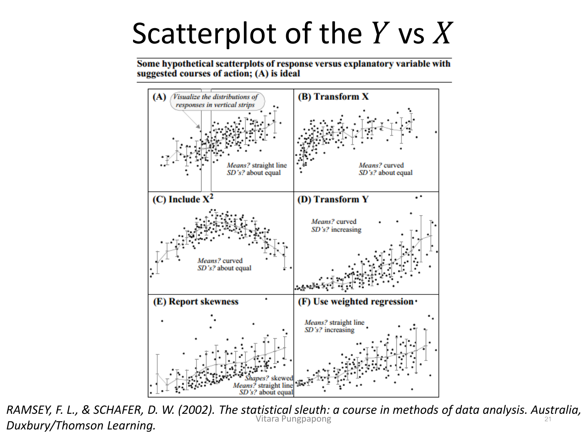
อ่านทีละแผง: (A) เส้นค่าเฉลี่ยตรง SD เท่ากันทุกช่วง = ไม่ต้องแก้อะไร (ideal). (B) เส้นค่าเฉลี่ยโค้ง แต่ SD ยังเท่ากันทุกช่วง → Transform X (ปัญหาอยู่ที่รูปทรงของความสัมพันธ์ ไม่ใช่ variance จึงแก้ที่ X พอ). (C) เส้นค่าเฉลี่ยเป็นรูปโค้งขึ้นแล้วลง (parabola) SD เท่ากัน → เพิ่มพจน์ X² เข้าไปในโมเดล (จะพบตัวอย่างจริงในหัวข้อ 8.1 ด้านล่าง). (D) เส้นค่าเฉลี่ยโค้งและ SD เพิ่มขึ้นตาม X พร้อมกัน → Transform Y (แก้ปัญหาสองเรื่องพร้อมกันด้วยการแปลงตัวแปรตามตัวเดียว — Box-Cox ในหัวข้อ 8.2 มักใช้กรณีนี้). (E) ข้อมูลเบ้ (skewed) ในแต่ละแถบแนวตั้ง → บางครั้งแก้ไม่ได้ด้วยการแปลงตัวแปร ให้รายงานความเบ้ไว้ตรง ๆ แทน. (F) เส้นค่าเฉลี่ยตรง แต่ SD เพิ่มขึ้นตาม X (megaphone) → ใช้ Weighted Regression (หัวข้อ 9 ด้านล่าง — สังเกตว่ากรณีนี้ไม่ต้องแปลงตัวแปรเลย เพราะเส้นค่าเฉลี่ยตรงอยู่แล้ว ปัญหามีแค่ variance ไม่คงที่).
ตารางรูปแบบการแปลงตัวแปรที่ใช้บ่อยที่สุด (log ทั้งคู่, log ตัวใดตัวหนึ่ง, หรือ reciprocal):
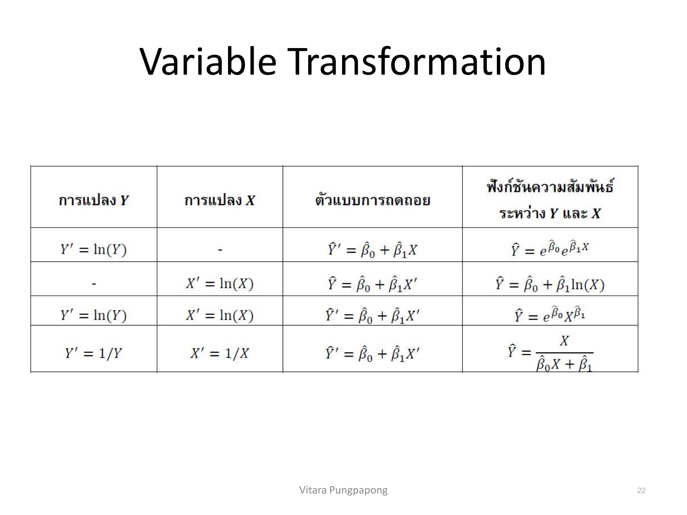
เห็นภาพกราฟของแต่ละสมการชัดขึ้นเมื่อเทียบกันเป็นภาพ — สังเกตว่าเครื่องหมายของ \(\beta_1\) (บวก/ลบ) เพียงตัวเดียวเปลี่ยนรูปทรงเส้นโค้งจากหน้าตาหนึ่งไปเป็นตรงข้ามได้ทันที:
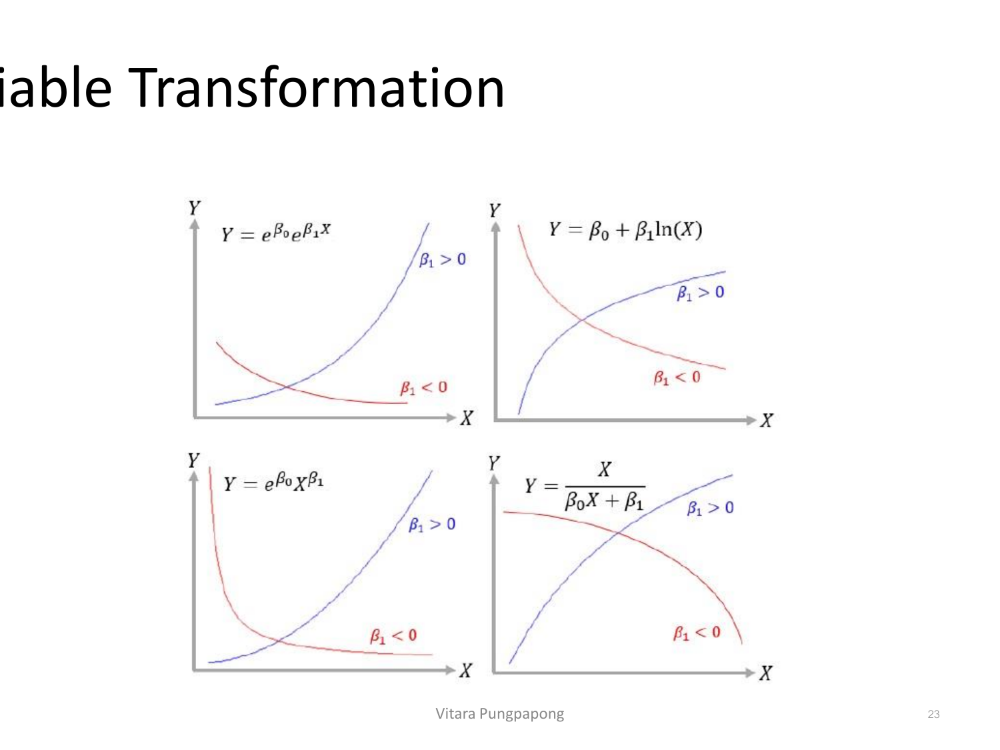
ข้อมูล body/brain weight ของสัตว์หลายชนิด รวมถึง Dipliodocus ที่ body=11700 (หน่วยเดียวกับสัตว์อื่นที่ตัวเล็กสุด body=1.04) — สเกลที่กว้างมากนี้ทำให้ scatter plot ดิบอ่านไม่ออกเลย:
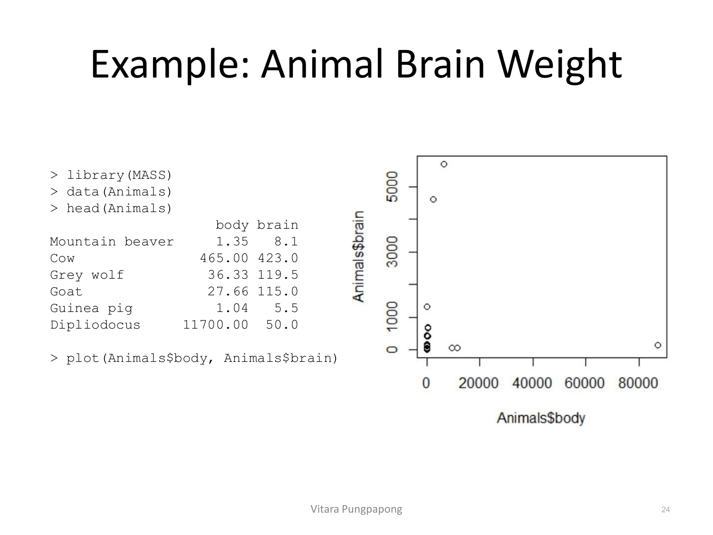
อ่านตัวเลขจริง: Dipliodocus body=11700, brain=50 กับ Cow body=465, brain=423 — เทียบกับ Guinea pig body=1.04, brain=5.5 ความต่างของสเกล body คือหมื่นเท่า (1.04 ถึง 11700) ทำให้จุดข้อมูลของสัตว์ตัวเล็กเกือบทั้งหมดถูกอัดกระจุกอยู่ที่มุมล่างซ้ายจนแยกไม่ออกเลยด้วยตาเปล่า plot แบบดิบนี้จึงใช้ตัดสินความสัมพันธ์ไม่ได้ — สอดคล้องกับสิ่งที่บทเรียนที่ 1 หัวข้อ 5 เตือนไว้ว่าต้อง plot ก่อนเสมอ.
แก้ด้วย log ทั้งสองแกน — สังเกตว่าจุดกระจายตัวเต็มพื้นที่กราฟและเห็นความสัมพันธ์เชิงเส้นชัดเจนขึ้นทันที:
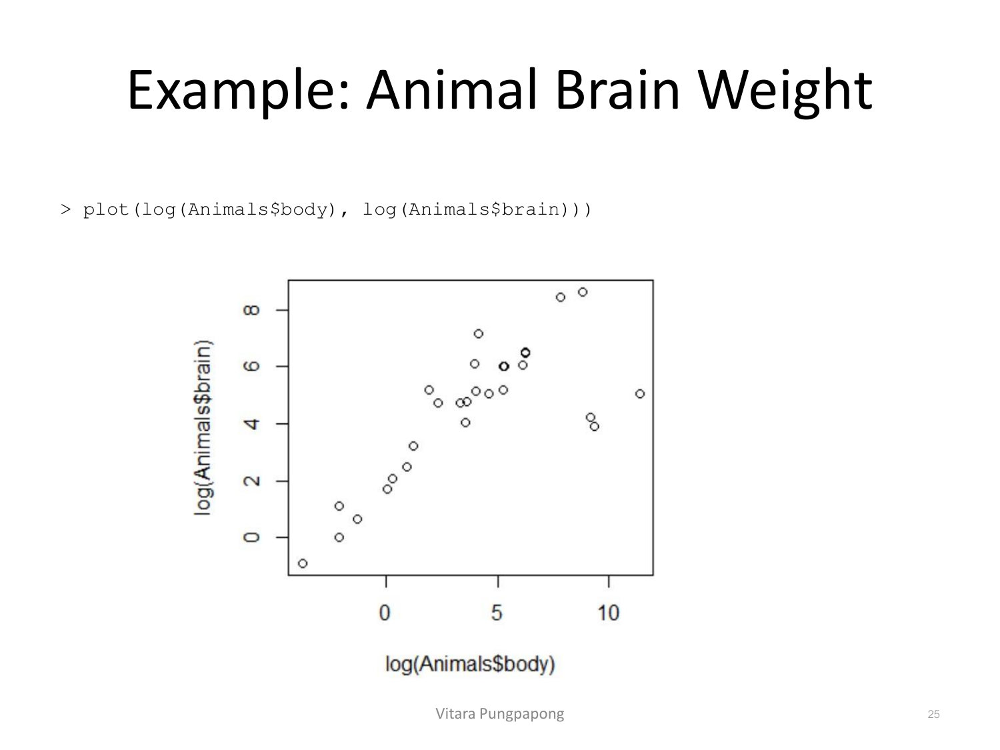
หลัง log ทั้งคู่ log(body) วิ่งจากประมาณ −4 ถึง 11 (แทนที่จะเป็น 1.04 ถึง 11700 บนสเกลดิบ) — การบีบสเกลด้วย log ทำให้สัตว์ตัวเล็กกับตัวใหญ่ถูกเทียบกันได้อย่างยุติธรรม (log แปลง "อัตราส่วน" ให้กลายเป็น "ระยะห่างเชิงเส้น") จุดตอนนี้กระจายเป็นแนวโน้มขึ้นชัดเจนตลอดช่วง เหมาะกับ linear regression มากกว่าเดิมมาก แต่ยังไม่ตรงเป๊ะ — สไลด์จึงลองเพิ่มพจน์กำลังสองของ log(body) เข้าไปด้วย (ตรงกับแผง (C) ใน decision guide ที่โค้งเป็น parabola):
> animalModel<-lm(log(brain)~log(body)+I(log(body)^2), data=Animals)
> summary(animalModel)
Coefficients:
Estimate Std. Error t value Pr(>|t|)
(Intercept) 2.57726 0.30097 8.563 6.65e-09 ***
log(body) 0.95253 0.10921 8.722 4.69e-09 ***
I(log(body)^2) -0.06244 0.01275 -4.899 4.84e-05 ***
---
Residual standard error: 1.116 on 25 degrees of freedom
Multiple R-squared: 0.7998, Adjusted R-squared: 0.7838ทั้งสามพจน์มีนัยสำคัญทางสถิติสูงมาก (p ทุกตัว < 0.0001) และ I(log(body)^2) มีค่าประมาณติดลบเล็กน้อย (−0.06244) — บ่งชี้ว่าความสัมพันธ์โค้งเล็กน้อยแบบ concave (โค้งแบบภูเขา ไม่ใช่เส้นตรงสนิท) สอดคล้องกับที่เห็นในภาพ log-log ว่าจุดข้อมูลมีความโค้งบางเล็กน้อยที่ปลายทั้งสองข้าง ไม่ใช่เส้นตรงสมบูรณ์.
ปัญหาของการแปลงตัวแปรด้วยมือ (log, sqrt, ...) คือบางครั้งไม่รู้ว่าควรแปลงแบบไหนถึงจะดีที่สุด — Box-Cox procedure หาคำตอบให้อัตโนมัติโดยค้นหาในตระกูล power transformation:
Box-Cox แก้ปัญหาได้พร้อมกันสามเรื่อง: ความเบ้ของ error, variance ไม่เท่ากัน, และ nonlinearity — ทั้งหมดด้วยการแปลง Y ตัวเดียว (ตรงกับแผง (D) ใน decision guide ของหัวข้อ 8).
ข้อมูล PlasmaLevel ตาม Age (5 กลุ่มอายุ 0–4) ฟิตโมเดลเชิงเส้นตรงก่อน:
> plasmamodel<-lm(PlasmaLevel~Age, data=plasma)
> summary(plasmamodel)
Coefficients:
Estimate Std. Error t value Pr(>|t|)
(Intercept) 13.4752 0.6379 21.126 < 2e-16 ***
Age -2.1820 0.2604 -8.379 1.92e-08 ***
---
Residual standard error: 1.841 on 23 degrees of freedom
Multiple R-squared: 0.7532, Adjusted R-squared: 0.7425R² = 0.7532 ดูไม่แย่ แต่ diagnostic plot บอกเรื่องที่ตัวเลขสรุปเดียวไม่บอก:
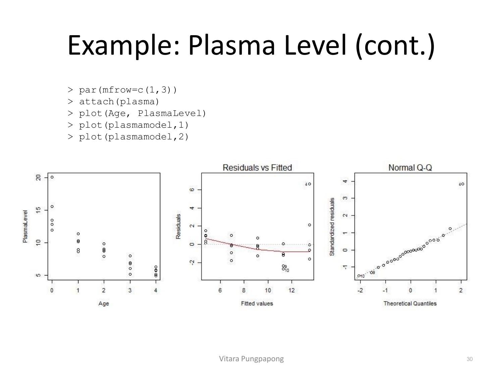
สังเกตแผงกลาง (Residuals vs Fitted): แถบ residual ที่ fitted value ต่ำ (ซ้าย, ตรงกับ Age น้อย) ดูกว้างกว่าฝั่ง fitted สูง (ขวา, Age มาก) เล็กน้อย และมีจุดหนึ่งดันขึ้นไปสูงถึง residual ≈ 6 ผิดจากกลุ่ม — แผงขวา (QQ) จุดเดียวกันนี้ก็เบี่ยงออกจากเส้นทแยงที่หางบนขวาเช่นกัน (ตรงกับรูปแบบ D-OUTLIER ในหัวข้อ 4) นี่คือสัญญาณว่าโมเดลเชิงเส้นตรงยังไม่ใช่ตัวเลือกที่ดีที่สุด — ให้ Box-Cox ช่วยหา λ ที่เหมาะสม:
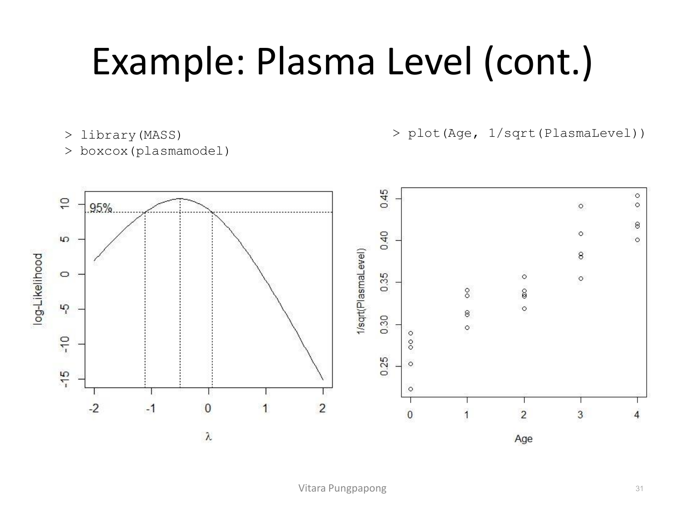
กราฟ log-likelihood ทางซ้ายจุดสูงสุด (ค่า λ ที่ดีที่สุด) อยู่ที่ประมาณ λ ≈ −0.5 และช่วงความเชื่อมั่น 95% (เส้นประแนวตั้งสามเส้น) ครอบคลุมตั้งแต่ประมาณ −1.1 ถึง 0.1 — เพราะ λ=−0.5 ตรงกับ \(Y' = 1/\sqrt{Y}\) พอดีตามตารางกรณีพิเศษด้านบน สไลด์จึงเลือกใช้ 1/sqrt(PlasmaLevel) เป็นตัวแปรตามใหม่ กราฟขวาแสดง Age เทียบกับตัวแปรที่แปลงแล้ว เห็นแนวโน้มเพิ่มขึ้นตาม Age ชัดเจน (สลับเครื่องหมายจากเดิมที่ PlasmaLevel ลดลงตาม Age เพราะ reciprocal กลับทิศทาง).
> plasmamodel2<-lm((1/sqrt(PlasmaLevel))~Age, data=plasma)
> summary(plasmamodel2)
Coefficients:
Estimate Std. Error t value Pr(>|t|)
(Intercept) 0.268026 0.008033 33.36 < 2e-16 ***
Age 0.040062 0.003280 12.22 1.55e-11 ***
---
Residual standard error: 0.02319 on 23 degrees of freedom
Multiple R-squared: 0.8665, Adjusted R-squared: 0.8606R² ขยับจาก 0.7532 เป็น 0.8665 — เพิ่มขึ้นถึง 11 percentage points ทั้งที่เป็นข้อมูลชุดเดียวกันแค่แปลงตัวแปรตาม ยืนยันด้วย diagnostic plot หลังแปลง:
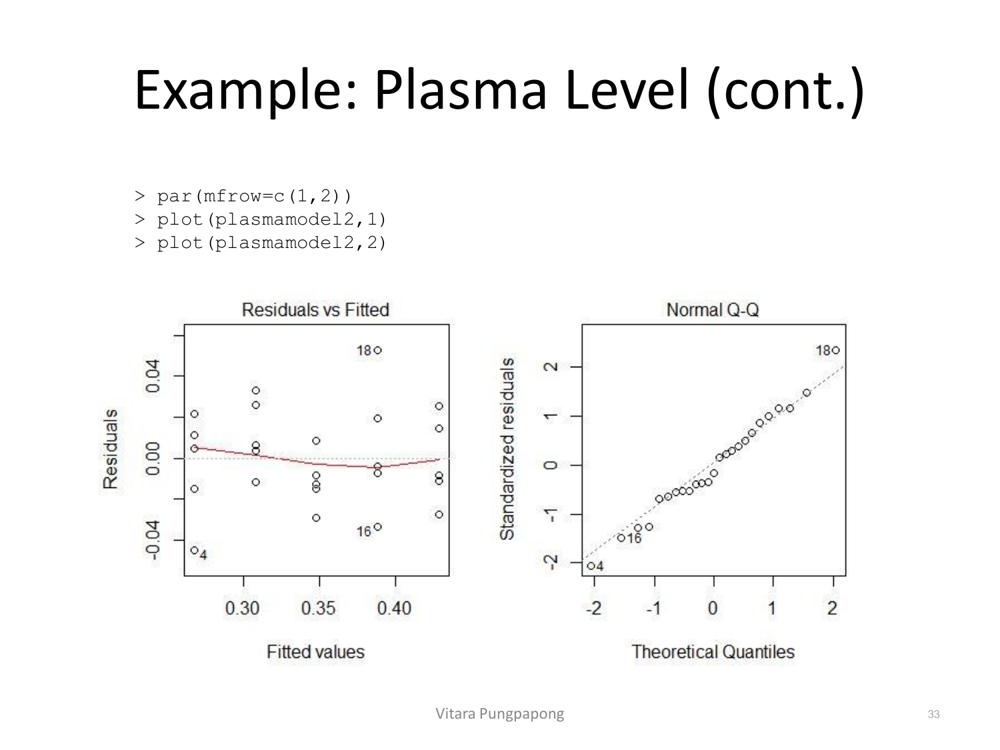
เทียบกับภาพก่อนแปลง (หน้า 30) โดยตรง: แถบ residual ในแผงซ้ายตอนนี้กว้างสม่ำเสมอกว่าเดิมตลอดช่วง fitted values ไม่เห็นความกว้างที่ต่างกันชัดเจนระหว่างซ้าย-ขวาแบบก่อนหน้า และในแผง QQ ขวา จุดส่วนใหญ่เกาะเส้นทแยงได้แนบสนิทกว่าเดิมมาก — ยังเหลือจุด 18 กับ 4 ที่เบี่ยงเล็กน้อยที่หางทั้งสองข้าง แต่degree ของการเบี่ยงน้อยกว่าก่อนแปลงชัดเจน สรุปได้ว่าการแปลงตัวแปรด้วย Box-Cox ช่วยให้ทั้ง linearity และ diagnostic โดยรวมดีขึ้นพร้อมกัน แม้จะไม่ได้สมบูรณ์แบบ 100% ก็ตาม (ข้อมูลจริงแทบไม่มีทางสมบูรณ์แบบ — เป้าหมายคือ "ดีขึ้นอย่างมีนัยสำคัญ" ไม่ใช่ "สมบูรณ์แบบ").
ใช้เมื่อความสัมพันธ์เป็นเส้นตรงอยู่แล้ว (ตรงกับแผง (F) ในหัวข้อ 8) แต่ variance ไม่คงที่ — แนวคิด: observation ที่มี variance เล็ก (แม่นยำกว่า) ควรมีน้ำหนักในการ fit มากกว่า observation ที่มี variance ใหญ่:
ถ้ามี outlier ในข้อมูล สไลด์แนะนำให้ประมาณจาก standard deviation function มากกว่า variance function (เพราะยกกำลังสองใน variance function จะขยายผลกระทบของ outlier ให้แรงขึ้นไปอีก).
ข้อมูล bloodpressure ตาม Age — plot ดิบแสดงแนวโน้มเพิ่มขึ้นตาม Age แต่ยังบอกไม่ได้ชัดว่า variance คงที่หรือไม่:
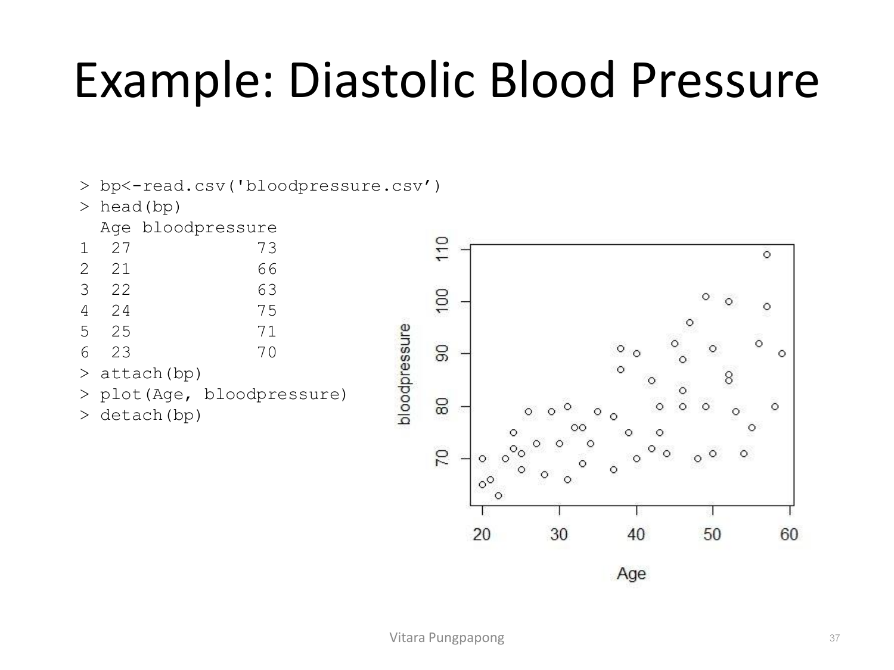
ยืนยันด้วย diagnostic plot หลัง fit — คราวนี้เห็นรูป megaphone ชัดเจนแบบเดียวกับแผง ✗ ในหัวข้อ 5:
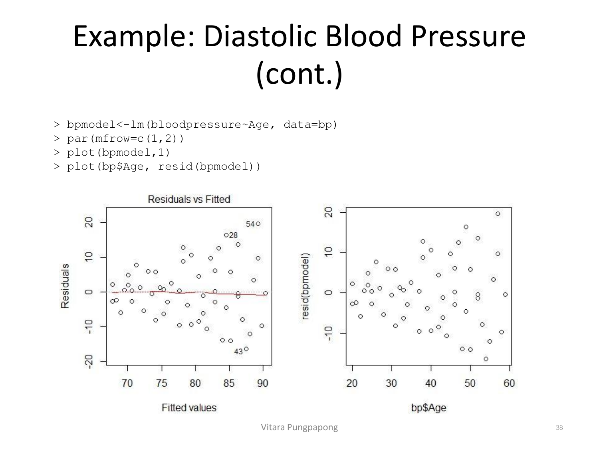
อ่านตัวเลขจริง: ที่ fitted value ต่ำ (~68-70, ตรงกับ Age น้อย) residual อยู่ในช่วงแคบ ๆ ประมาณ ±5 แต่ที่ fitted value สูง (~90, Age มาก) residual กระจายกว้างถึง ±20 — ความกว้างของแถบต่างกันถึง 4 เท่าระหว่างสองปลาย นี่คือ heteroscedasticity ที่ชัดเจนมาก ตรงกับแผง (F) ในหัวข้อ 8 (เส้นค่าเฉลี่ยตรง แต่ SD เพิ่มตาม X) — ทางแก้ที่เหมาะคือ weighted regression ไม่ใช่ transform Y (เพราะ mean function เป็นเส้นตรงอยู่แล้ว การ transform Y จะทำให้ linearity เสียไปแทน).
ขั้นตอน: หา standard deviation function จาก |residual| แล้วคำนวณ weight:
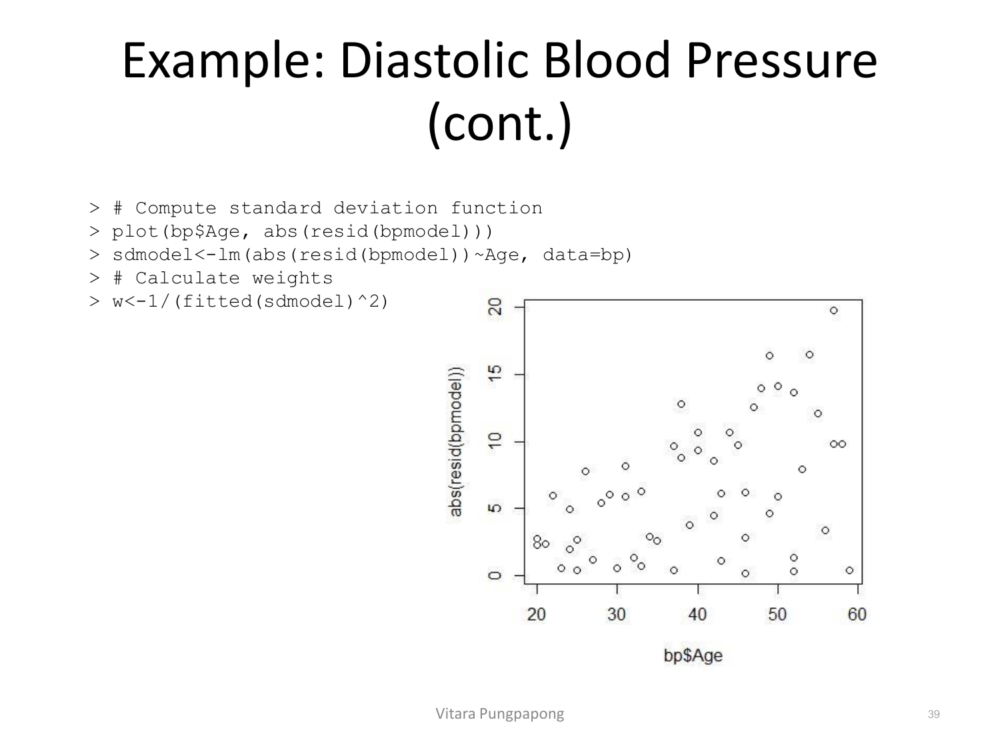
> plot(bp$Age, abs(resid(bpmodel)))
> sdmodel<-lm(abs(resid(bpmodel))~Age, data=bp)
> w<-1/(fitted(sdmodel)^2)\(|e_i|\) เพิ่มขึ้นตาม Age อย่างเป็นระบบ (จากใกล้ 0 ที่ Age น้อย ไปถึง ~15-20 ที่ Age มาก) — ยืนยันสิ่งที่เห็นในภาพ megaphone ก่อนหน้าเชิงปริมาณ: fit เส้นถดถอยเสริม (sdmodel) กับค่า |residual| นี้ แล้วใช้ค่าทำนายจากเส้นเสริมนั้นมาคำนวณ weight ด้วยสูตร \(w_i = 1/\hat{s}_i^2\) — observation ของคนอายุมาก (ที่ variance กว้าง) จะได้ weight น้อยกว่าคนอายุน้อยโดยอัตโนมัติ:
> bpwtmodel<-lm(bloodpressure~Age, data=bp, weight=w)
> summary(bpwtmodel)
Coefficients:
Estimate Std. Error t value Pr(>|t|)
(Intercept) 55.56577 2.52092 22.042 < 2e-16 ***
Age 0.59634 0.07924 7.526 7.19e-10 ***
---
Residual standard error: 1.213 on 52 degrees of freedom
Multiple R-squared: 0.5214, Adjusted R-squared: 0.5122สังเกตว่า Residual standard error ของ weighted model (1.213) เทียบไม่ได้ตรง ๆ กับ unweighted model เพราะเป็นค่าที่คำนวณบน residual ที่ถ่วงน้ำหนักแล้ว — สิ่งที่สำคัญกว่าคือ Std. Error ของสัมประสิทธิ์ Age (0.07924) ตอนนี้แม่นยำกว่า เพราะไม่ได้ถูกครอบงำโดย observation ที่มี variance สูงเหมือนใน OLS ธรรมดาอีกต่อไป — t-test และ CI ของ Age จึงน่าเชื่อถือกว่า.
เมื่อ Durbin-Watson test ยืนยันว่ามี serial correlation ในข้อมูล time-series และไม่สามารถแก้ด้วยการเติม time เป็นตัวแปรอิสระได้ (กรณี (C)/(D) จากหัวข้อ 6 ไม่ใช่กรณี (B)) — สไลด์เสนอ Cochrane-Orcutt Transformation เป็นวิธีแก้:
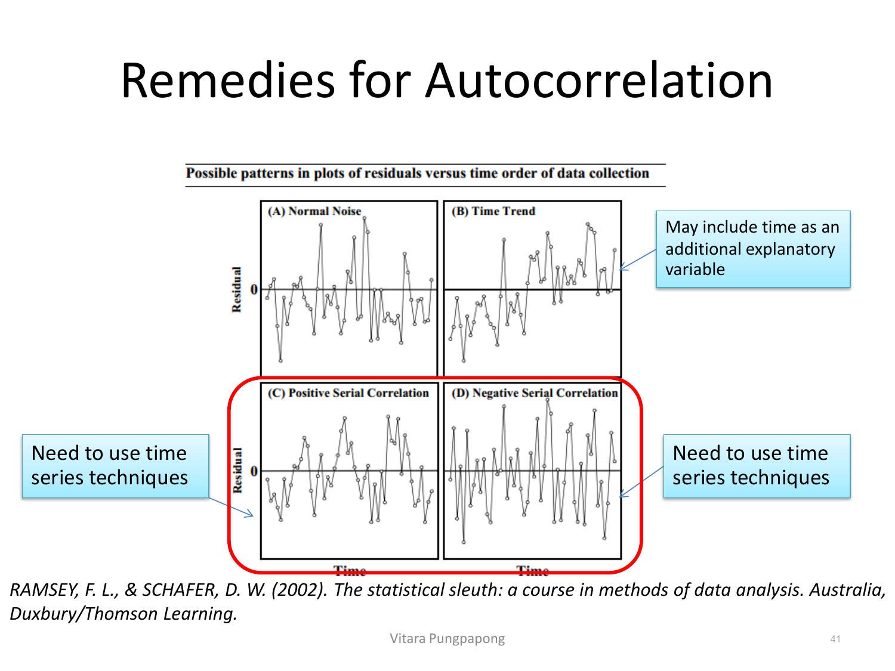
ภาพนี้คือภาพเดียวกับหัวข้อ 6 (หน้า 16) แต่ครูวงกลมสีแดงเน้นเฉพาะสองแผงล่าง (C) และ (D) — ย้ำว่า Cochrane-Orcutt ใช้แก้เฉพาะกรณีสหสัมพันธ์แบบอนุกรมจริง ไม่ใช่กรณี Time Trend (B) ที่แก้ง่ายกว่าด้วยการเติมตัวแปร time.
> model<-lm(Price~Marketshare, data=toothpaste)
> summary(model)
Coefficients:
Estimate Std. Error t value Pr(>|t|)
(Intercept) -1.165292 0.035532 -32.80 4.21e-16 ***
Marketshare 0.293930 0.005913 49.71 < 2e-16 ***
---
Residual standard error: 0.01629 on 16 degrees of freedom
Multiple R-squared: 0.9936, Adjusted R-squared: 0.9932R² = 0.9936 ดูดีมาก แต่ข้อมูลนี้เป็น time-series (ราคาที่เก็บตามช่วงเวลา) — ต้องเช็ค independence assumption ก่อนเชื่อผลนี้:
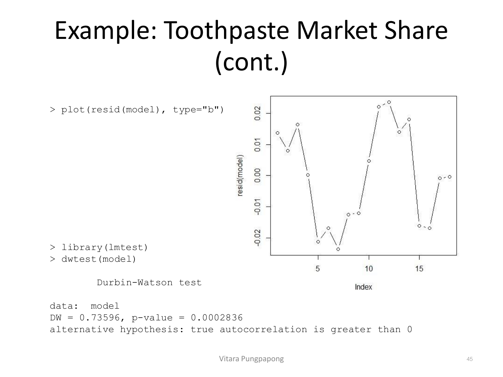
> plot(resid(model), type="b")
> library(lmtest)
> dwtest(model)
Durbin-Watson test
data: model
DW = 0.73596, p-value = 0.0002836
alternative hypothesis: true autocorrelation is greater than 0เทียบกับ 4 รูปแบบในหัวข้อ 6: residual ที่นี่ไม่ใช่จุดกระจายสุ่มแบบ (A) แต่แกว่งขึ้นลงเป็นคลื่นยาวราบเรียบ — ลงต่ำสุดที่ index ~6-7 (residual ≈ −0.023) ขึ้นสูงสุดที่ index ~11-12 (residual ≈ 0.023) แล้ววนลงอีกครั้ง — ตรงกับรูปแบบ (C) Positive Serial Correlation เป๊ะ (จุดที่ติดกันมีค่าคล้ายกัน แกว่งเป็นช่วงยาว) ยืนยันด้วย DW=0.736 ซึ่งต่ำกว่า 2 มาก (ใกล้ 0) และ p-value=0.0002836 ต่ำกว่า 0.05 มาก จึงปฏิเสธ H₀ — มี positive serial correlation จริง ต้องแก้ด้วย Cochrane-Orcutt.
> install.packages('orcutt')
> library(orcutt)
> comodel<-cochrane.orcutt(model)
> summary(comodel)
Estimate Std. Error t value Pr(>|t|)
(Intercept) -1.200727 0.076987 -15.597 1.118e-10 ***
Marketshare 0.299296 0.012326 24.282 1.867e-13 ***
---
Residual standard error: 0.0127 on 15 degrees of freedom
Multiple R-squared: 0.9752 , Adjusted R-squared: 0.9735
Durbin-Watson statistic
(original): 0.73596 , p-value: 2.836e-04
(transformed): 1.67445 , p-value: 1.658e-01
> comodel$rho
[1] 0.6103753หลังแปลงข้อมูลด้วย Cochrane-Orcutt: DW ขยับจาก 0.73596 (p=0.0003, ปฏิเสธ H₀) เป็น 1.67445 (p=0.1658, ไม่ปฏิเสธ H₀) — autocorrelation ที่เคยมีนัยสำคัญตอนนี้หายไป (แม้ยังไม่ถึง 2 เป๊ะ แต่ p-value สูงพอที่จะสรุปว่าไม่มีนัยสำคัญ). ค่า \(\rho \text{ (rho)} = 0.6104\) ที่ประมาณได้คือระดับ correlation ระหว่าง error ที่ติดกัน — ค่อนข้างสูง (ρ ยิ่งใกล้ 1 ยิ่งมี autocorrelation แรง) อธิบายได้ว่าทำไมโมเดลเดิมถึงมีปัญหาชัดเจนขนาดนี้. สังเกตด้วยว่าค่าประมาณ Marketshare เปลี่ยนจาก 0.293930 เป็น 0.299296 (ใกล้เคียงเดิม) แต่ Std. Error เปลี่ยนจาก 0.005913 เป็น 0.012326 — SE เพิ่มขึ้นเป็นสองเท่า สะท้อนว่า SE เดิมจาก OLS ธรรมดาถูกประเมินต่ำเกินจริงไปมาก (ตรงกับที่ตารางหัวข้อ 7 บอกว่า independence ที่พังทำให้ SE ไม่แม่นยำ).
เมื่อตัวแปรอิสระหลายตัวมีความสัมพันธ์กันเองสูง (correlated กันเอง ไม่ใช่กับ Y) — ผลที่ตามมาคือสัมประสิทธิ์ไม่เสถียร (ค่าประมาณเปลี่ยนแปลงมากถ้าตัดตัวแปรใดตัวหนึ่งออก หรือเพิ่ม observation เข้ามาเล็กน้อย) และค่า standard error ไม่น่าเชื่อถือ. สัญญาณที่บ่งชี้ว่ามี multicollinearity: (1) correlation ระหว่างคู่ตัวแปรอิสระสูง (2) ค่าประมาณสัมประสิทธิ์เปลี่ยนไปมากเมื่อลองโมเดลต่าง ๆ (3) t-test รายตัวไม่มีนัยสำคัญ แต่ F-test ภาพรวมกลับมีนัยสำคัญ — สัญญาณข้อ (3) นี้เป็นตัวที่ตรวจจับได้ง่ายที่สุดจากการอ่าน output.
วัดเชิงปริมาณด้วย Variance Inflation Factor (VIF):
Rule of thumb ที่ต้องจำ: VIF = 1 ไม่มี correlation กับตัวแปรอื่นเลย, VIF > 4 เริ่มมี multicollinearity ระดับปานกลาง, VIF > 10 multicollinearity รุนแรง.
ตัวอย่างจริง — ข้อมูล ConsumerIndex (food, clothing, fuel, household, transport):
> library(usdm)
> vif(ConsumerIndex[,-6])
Variables VIF
1 food 10.74926
2 clothing 127.72057
3 fuel 25.46451
4 household 125.80314
5 transport 12.38942ทุกตัวแปรมี VIF > 10 — รุนแรงทั้งชุด แต่ clothing (127.72) กับ household (125.80) สูงผิดปกติชัดเจนกว่าตัวอื่นมาก บ่งชี้ว่าสองตัวนี้ (และอาจรวมกับตัวอื่น ๆ) สัมพันธ์กันเองแรงมาก — ยืนยันด้วย output จากการ fit โมเดลเต็ม:
> OLSConsumer<-lm(housing~., ConsumerIndex)
> summary(OLSConsumer)
Coefficients:
Estimate Std. Error t value Pr(>|t|)
(Intercept) -63.25773 4.85591 -13.027 < 2e-16 ***
food 0.16924 0.05554 3.047 0.00269 **
clothing -0.10575 0.17627 -0.600 0.54935
fuel -0.46147 0.08888 -5.192 5.95e-07 ***
household 1.44850 0.19048 7.604 1.93e-12 ***
transport 0.50537 0.10412 4.854 2.75e-06 ***
---
Residual standard error: 2.57 on 168 degrees of freedom
Multiple R-squared: 0.974, Adjusted R-squared: 0.9732
F-statistic: 1257 on 5 and 168 DF, p-value: < 2.2e-16เจอสัญญาณข้อ (3) ตรงเป๊ะ: clothing มี t=−0.600, p=0.54935 (ไม่มีนัยสำคัญเลย) ในขณะที่ F-statistic ภาพรวมของทั้งโมเดล = 1257, p < 2.2e-16 (มีนัยสำคัญสูงมาก) — ถ้าดูแค่ตัวแปร clothing ตัวเดียวอาจสรุปผิดว่ามันไม่เกี่ยวข้องกับ housing เลย ทั้งที่จริง ๆ แล้วมันแค่ถูก "บัง" ด้วยตัวแปรอื่นที่สัมพันธ์กันสูง (โดยเฉพาะ household ที่ VIF สูงพอ ๆ กัน) — นี่คือผลของ unstable coefficients และ unreliable SE ที่ multicollinearity ก่อขึ้นพอดี.
clothing ในตัวอย่าง ConsumerIndex มี VIF = 127.72 ตีความได้ว่าอย่างไร?สไลด์เสนอ 4 แนวทาง: (1) Centering ตัวแปรอิสระแต่ละตัว (ลบด้วยค่าเฉลี่ยก่อน fit) (2) ตัดตัวแปรที่สัมพันธ์กันสูงออกบางตัว (3) ใช้ Ridge Regression (4) ใช้ Principal Component Analysis (PCA) — สองข้อหลังนี้สไลด์ลงรายละเอียดและมีตัวอย่าง R จริง จะดูทีละอัน.
Ridge regression อยู่ในกลุ่ม penalized regression — เพิ่มพจน์ลงโทษ (penalty) ที่ขนาดของสัมประสิทธิ์เข้าไปในเป้าหมายที่ต้องการ minimize:
สังเกตว่าเมื่อ \(\lambda=0\) สูตรนี้กลายเป็น OLS ปกติทันที — ยิ่ง λ มาก สัมประสิทธิ์ยิ่งถูก "หด" เข้าใกล้ 0 มากขึ้น (แลกกับ bias ที่เพิ่มขึ้นเพื่อความเสถียรที่มากขึ้น) การเพิ่ม \(\lambda I\) เข้าไปใน \(X^\top X\) ก่อน invert ยังช่วยแก้ปัญหาทางตัวเลข (numerical) ที่เกิดจาก multicollinearity โดยตรง เพราะ \(X^\top X\) ที่ใกล้ singular (จากตัวแปรที่สัมพันธ์กันสูง) จะ invert ได้อย่างเสถียรขึ้นเมื่อบวก λI เข้าไป.
ทดลองหา λ ที่เหมาะสมด้วย ridge trace plot บนข้อมูล ConsumerIndex เดิม:
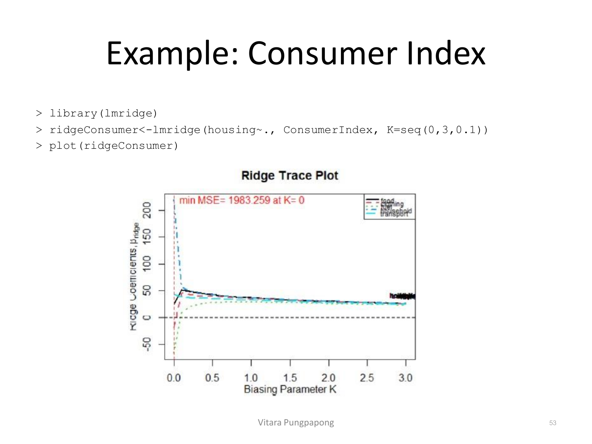
อ่านภาพนี้ให้ตรงประเด็น: ที่ K=0 (ซึ่งเทียบเท่า OLS ธรรมดา) เส้นสัมประสิทธิ์ของแต่ละตัวแปรกระจัดกระจายรุนแรงมาก — บางเส้นพุ่งขึ้นสูงถึง 200 บางเส้นดิ่งลงต่ำกว่า −50 — นี่คือภาพสะท้อนโดยตรงของ "unstable regression coefficients" ที่ multicollinearity ก่อขึ้น (ตรงกับที่ OLS output หน้าก่อนแสดงค่า clothing ที่ไม่มีนัยสำคัญ) พอ K เพิ่มขึ้นเพียงเล็กน้อย (~0.2-0.5) เส้นทุกเส้นก็รวมตัวกันแน่นเป็นกลุ่มแคบ ๆ อย่างรวดเร็ว และคงตัวเสถียรตลอดช่วง K ที่เหลือ — นี่คือเป้าหมายของ ridge regression: เลือก K ที่มากพอจะทำให้สัมประสิทธิ์เสถียร แต่ไม่มากเกินจนทำให้ bias สูงเกินความจำเป็น.
> ridgeConsumer<-lmridge(housing~., ConsumerIndex, K=0.25)
> summary(ridgeConsumer)
Coefficients: for Ridge parameter K= 0.25
Estimate Estimate (Sc) StdErr (Sc) t-value (Sc) Pr(>|t|)
Intercept -53.2682 -24644.2886 606.0824 -40.662 < 2.2e-16 ***
food 0.3166 48.0166 2.7530 17.442 < 2.2e-16 ***
clothing 0.2564 42.2462 1.5389 27.452 < 2.2e-16 ***
fuel 0.1543 22.5119 2.2343 10.075 < 2.2e-16 ***
household 0.3138 47.4789 1.4210 33.412 < 2.2e-16 ***
transport 0.4239 36.8233 2.5871 14.233 < 2.2e-16 ***ที่ K=0.25 ทุกตัวแปรมีนัยสำคัญทางสถิติหมดแล้ว รวมถึง clothing ที่เดิมใน OLS ไม่มีนัยสำคัญเลย (p=0.549) — และสัมประสิทธิ์ทุกตัวเป็นบวกสอดคล้องกันในทิศทางเดียว (ต่างจาก OLS เดิมที่ clothing และ fuel ติดลบ) — นี่คือประโยชน์ของ ridge เมื่อ multicollinearity รุนแรง: ได้สัมประสิทธิ์ที่ตีความได้สมเหตุสมผลและเสถียรกว่า แลกกับการยอมรับ bias เล็กน้อยเพื่อแลกกับ variance ที่ลดลงมาก (bias-variance tradeoff).
แนวคิด: แทนที่จะใช้ตัวแปรอิสระดิบที่สัมพันธ์กันเอง ให้สร้างตัวแปรใหม่ (Principal Components) ที่เป็นผลรวมเชิงเส้นของตัวแปรเดิม โดยแต่ละ PC ไม่สัมพันธ์กันเอง (orthogonal) และเรียงลำดับตามปริมาณความแปรปรวนที่อธิบายได้จากมากไปน้อย:
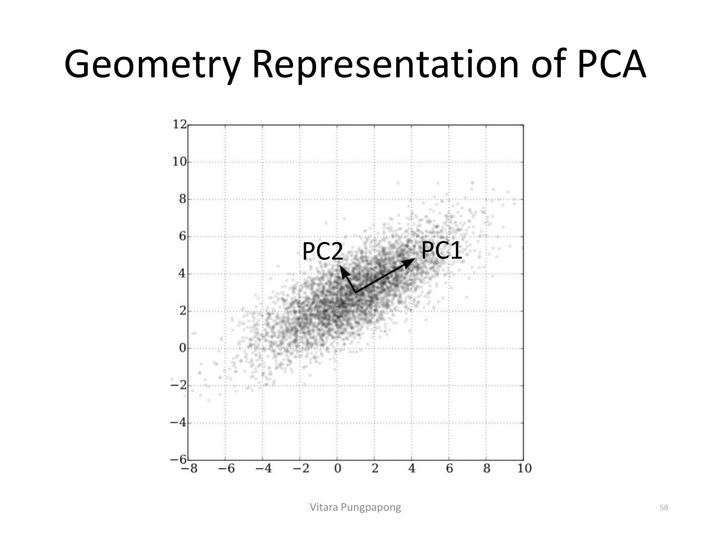
อ่านภาพเชิงเรขาคณิต: กลุ่มจุดข้อมูล (สีเทา) เรียงตัวเป็นวงรียาวเฉียง ๆ — ทิศทางที่จุดกระจายตัวมากที่สุดคือแนวเฉียงยาวของวงรี ลูกศร PC1 ชี้ไปตามแนวนั้นพอดี (นี่คือนิยามของ PC1: ทิศทางที่มี variance มากที่สุด) ส่วน PC2 ตั้งฉากกับ PC1 พอดี ชี้ไปตามแนว "แคบ" ของวงรี (ทิศทางที่เหลือหลังตัด PC1 ออกไปแล้ว) — สังเกตว่า PC1 และ PC2 ตั้งฉากกันเสมอ (orthogonal) นี่คือเหตุผลที่ PC ที่ได้ไม่มี multicollinearity ระหว่างกันเองเลย แม้ตัวแปรดิบเดิมจะสัมพันธ์กันสูงแค่ไหนก็ตาม.
คำถามที่ตามมาเสมอ: ควรใช้กี่ PC? ใช้ scree plot (กราฟ eigenvalue λᵢ เทียบกับลำดับ i) แล้วมองหาจุด "elbow" (ข้อศอก) ที่เส้นเริ่มราบ:
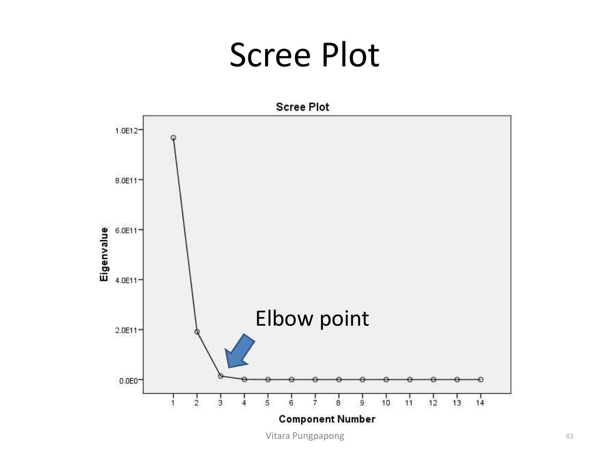
อ่านตัวเลข: eigenvalue ของ component 1 อยู่ที่ราว 9.6×10¹¹ ลดฮวบเหลือประมาณ 2×10¹¹ ที่ component 2 แล้วเหลือแทบ 0 ตั้งแต่ component 3 เป็นต้นไป (จุดที่ลูกศรชี้) — "ข้อศอก" ที่เส้นหักจากชันมากมาเป็นราบสนิทอยู่ที่ประมาณ component 3 แปลว่าควรใช้ 2 PC แรกก็เพียงพอ (component ก่อนข้อศอก) ส่วน component ที่เหลือแทบไม่มีข้อมูลเพิ่มเติมให้ (eigenvalue ใกล้ 0 = variance ที่ทิศทางนั้นแทบไม่มี).
ตัวอย่างจริง — ทำ PCA บนตัวแปรอิสระ 5 ตัวของ ConsumerIndex:
> consumer.pca<-prcomp(ConsumerIndex[,-6], center=TRUE, scale=TRUE)
> summary(consumer.pca)
Importance of components:
PC1 PC2 PC3 PC4 PC5
Standard deviation 2.173 0.41970 0.27941 0.14747 0.06490
Proportion of Variance 0.944 0.03523 0.01561 0.00435 0.00084
Cumulative Proportion 0.944 0.97919 0.99481 0.99916 1.00000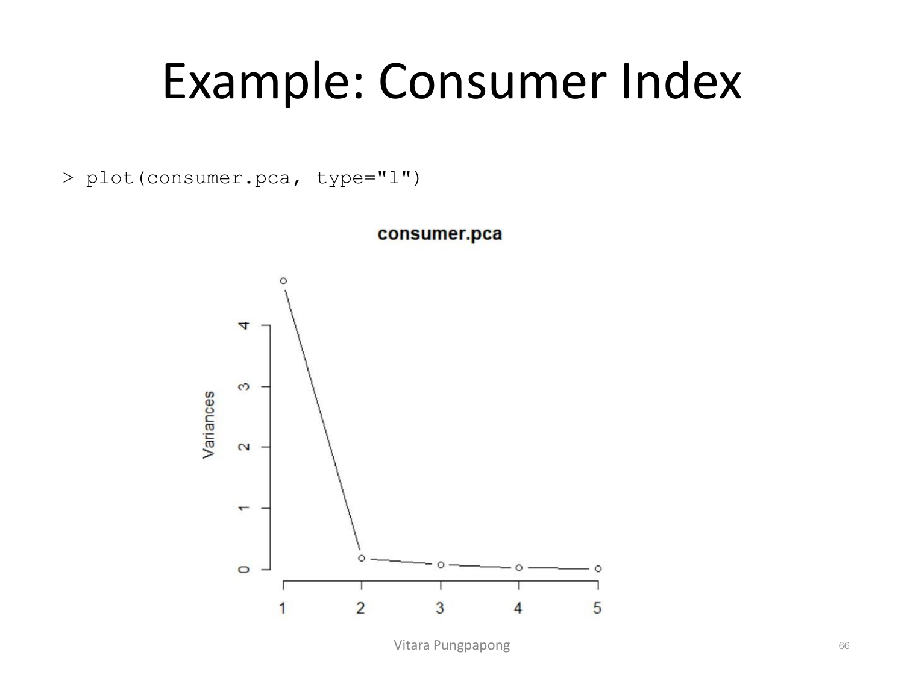
ยืนยันตัวเลขจาก summary() ด้วยภาพ: PC1 เพียงตัวเดียวอธิบายความแปรปรวนได้ถึง 94.4% ของทั้งหมด (Proportion of Variance = 0.944) PC2 อธิบายเพิ่มอีกแค่ 3.5% รวมสองตัวแรกได้ 97.9% (Cumulative) — สอดคล้องกับภาพ scree plot ที่ลดฮวบจาก ~4.7 เหลือ ~0.18 แล้วราบสนิท — เหตุผลที่ PC1 อธิบายได้มากขนาดนี้คือตัวแปรทั้ง 5 ตัวสัมพันธ์กันสูงมากอยู่แล้ว (ตรงกับ VIF ที่สูงลิ่วในหัวข้อ 11) ทำให้ทิศทางความแปรปรวนหลักมีแค่ทิศทางเดียวจริง ๆ — ตัดสินใจใช้ PC1 และ PC2 แทนตัวแปรดิบทั้ง 5 ตัว:
> newdf<-data.frame(PC1=pc[,1], PC2=pc[,2], housing=ConsumerIndex[,6])
> modelPC<-lm(housing~., data=newdf)
> summary(modelPC)
Coefficients:
Estimate Std. Error t value Pr(>|t|)
(Intercept) 128.8414 0.2377 542.03 < 2e-16 ***
PC1 7.0545 0.1097 64.29 < 2e-16 ***
PC2 -3.1408 0.5680 -5.53 1.18e-07 ***
---
Residual standard error: 3.136 on 171 degrees of freedom
Multiple R-squared: 0.9606, Adjusted R-squared: 0.9601ทั้ง PC1 และ PC2 มีนัยสำคัญทางสถิติสูงมาก (p < 2e-16 และ p ≈ 1.18e-07) — ไม่มีปัญหา multicollinearity อีกต่อไปเพราะ PC1 กับ PC2 ตั้งฉากกันโดยนิยาม R² = 0.9606 ยังสูงเกือบเท่าโมเดล OLS เดิม (0.974) ทั้งที่ใช้ตัวแปรอธิบายแค่ 2 ตัวแทน 5 ตัว — นี่คือข้อแลกเปลี่ยนหลักของ PCA: ตีความสัมประสิทธิ์ได้ยากขึ้น (PC1, PC2 ไม่ใช่ตัวแปรที่มีความหมายทางธุรกิจตรง ๆ อีกต่อไป ต้องย้อนกลับไปดู loading เพื่อตีความ) แลกกับการกำจัด multicollinearity และลดมิติของปัญหาไปพร้อมกัน.
ตารางนี้ไล่ทุกหน้าของ Lecture3.pdf ตั้งแต่หน้า 1 ถึง 68 (นับตามหน้าจริงของไฟล์ PDF ไม่ใช่เลขหน้าที่พิมพ์ในสไลด์ ซึ่งข้ามเลข 54 ไปเนื่องจากมีสไลด์ถูกลบออกจาก deck ต้นฉบับ) — หน้าที่มี ✓ ถูกอธิบายและ/หรือใส่รูปในเนื้อหาข้างบนแล้ว ส่วนที่เหลือ (etc) เป็นหน้าปก/อ้างอิงซ้ำ/R syntax ล้วน ๆ ที่ไม่มีเนื้อหาทฤษฎีใหม่.
| หน้า | เนื้อหา | สถานะ |
|---|---|---|
| 1 | ปกเรื่อง "Lecture 3: Regression Diagnostics and Remedies" | etc — ปก |
| 2 | อ้างอิง Ramsey & Schafer (citation slide) | etc — citation อยู่ใน box แนะนำอ่านด้านบนแล้ว |
| 3 | Regression Diagnostics — นิยาม residual e_i=Y_i−Ŷ_i | ✓ หัวข้อ 1 |
| 4 | Properties of Residuals — mean=0, variance=MSE, nonindependence | ✓ หัวข้อ 1 |
| 5 | Checking Assumptions — ภาพรวม linearity+normality | ✓ หัวข้อ 2 |
| 6 | Checking Assumptions — ภาพรวม constant variance+independence | ✓ หัวข้อ 2 |
| 7 | 1. Checking Linearity Assumption — pass/fail residual plot | ✓ หัวข้อ 3 (มีรูป) |
| 8 | Residuals Plot — ตัวอย่างจริง fitted vs resid, plot(model1,1) | ✓ หัวข้อ 3 (มีรูป) |
| 9 | 2. Checking Normality Assumption — pass/fail QQ plot | ✓ หัวข้อ 4 (มีรูป) |
| 10 | Normal Probability Plots (QQ Plots) — 4 รูปแบบ (Ramsey&Schafer) | ✓ หัวข้อ 4 (มีรูป) |
| 11 | Normal QQplot — qqnorm/qqline/plot(model1,2) ผลจริง | ✓ หัวข้อ 4 (มีรูป) |
| 12 | Shapiro Wilk Test — H0/H1 + shapiro.test() output | ✓ หัวข้อ 4 |
| 13 | 3. Checking Constant Variance Assumption — pass/fail + Breusch-Pagan intro | ✓ หัวข้อ 5 (มีรูป) |
| 14 | Breusch-Pagan Test — H0/H1 + bptest() output | ✓ หัวข้อ 5 |
| 15 | 4. Checking Independence Assumption — ภาพรวม 3 วิธี | ✓ หัวข้อ 6 |
| 16 | Residuals vs time order — 4 รูปแบบ (Ramsey&Schafer) | ✓ หัวข้อ 6 (มีรูป) |
| 17 | Residuals vs time order — Example: Corn Yield | ✓ หัวข้อ 6 (มีรูป) |
| 18 | Run Test — H0/H1 + runs.test() output | ✓ หัวข้อ 6 |
| 19 | Durbin-Watson Test — H0/H1 + dwtest() output | ✓ หัวข้อ 6 |
| 20 | Robustness of Least Squares Inferences — ตาราง 4 assumption/ผลกระทบ | ✓ หัวข้อ 7 |
| 21 | Scatterplot of Y vs X — decision guide 6 แผง (Ramsey&Schafer) | ✓ หัวข้อ 8 (มีรูป) |
| 22 | Variable Transformation — ตารางรูปแบบการแปลง | ✓ หัวข้อ 8 (มีรูป) |
| 23 | Variable Transformation — กราฟรูปทรง 4 แบบ | ✓ หัวข้อ 8 (มีรูป) |
| 24 | Example: Animal Brain Weight — scatter ดิบ + head(Animals) | ✓ หัวข้อ 8.1 (มีรูป) |
| 25 | Example: Animal Brain Weight — log-log scatter | ✓ หัวข้อ 8.1 (มีรูป) |
| 26 | Example: Animal Brain Volume — lm() กับ log(body)+log(body)² output | ✓ หัวข้อ 8.1 |
| 27 | Box-Cox Transformation — แนวคิด/เหตุผลที่ต้องใช้ | ✓ หัวข้อ 8.2 |
| 28 | Box-Cox Transformation — สูตร Y′=Y^λ + กรณีพิเศษ | ✓ หัวข้อ 8.2 |
| 29 | Example: Plasma Level — lm(PlasmaLevel~Age) output | ✓ หัวข้อ 8.2 |
| 30 | Example: Plasma Level (cont.) — scatter+resid vs fitted+QQ ก่อนแปลง | ✓ หัวข้อ 8.2 (มีรูป) |
| 31 | Example: Plasma Level (cont.) — boxcox() log-likelihood + scatter หลังแปลง | ✓ หัวข้อ 8.2 (มีรูป) |
| 32 | Example: Plasma Level (cont.) — lm(1/sqrt(PlasmaLevel)~Age) output | ✓ หัวข้อ 8.2 |
| 33 | Example: Plasma Level (cont.) — resid vs fitted+QQ หลังแปลง | ✓ หัวข้อ 8.2 (มีรูป) |
| 34 | Weighted Regression — เมื่อไรควรใช้ | ✓ หัวข้อ 9 |
| 35 | Weighted Regression — แนวคิด + สูตร weight | ✓ หัวข้อ 9 |
| 36 | Variance and Standard Deviation Functions — 4 กรณี | ✓ หัวข้อ 9 |
| 37 | Example: Diastolic Blood Pressure — read.csv + scatter | ✓ หัวข้อ 9 (มีรูป) |
| 38 | Example: Diastolic Blood Pressure (cont.) — plot(bpmodel,1)+resid vs Age | ✓ หัวข้อ 9 (มีรูป) |
| 39 | Example: Diastolic Blood Pressure (cont.) — abs(resid) vs Age + คำนวณ weight | ✓ หัวข้อ 9 (มีรูป) |
| 40 | Example: Diastolic Blood Pressure (cont.) — lm(weight=w) output | ✓ หัวข้อ 9 |
| 41 | Remedies for Autocorrelation — ภาพเดิมเน้นกรณี C/D | ✓ หัวข้อ 10 (มีรูป) |
| 42 | Remedies for Autocorrelation — Cochrane-Orcutt/ARIMA (รายการ) | ✓ หัวข้อ 10 |
| 43 | Cochrane-Orcutt Transformation — โมเดล+ขั้นตอน 5 ข้อ | ✓ หัวข้อ 10 |
| 44 | Example: Toothpaste Market Share — lm(Price~Marketshare) output | ✓ หัวข้อ 10 |
| 45 | Example: Toothpaste Market Share (cont.) — resid plot + dwtest() | ✓ หัวข้อ 10 (มีรูป) |
| 46 | cochrane.orcutt() output + comodel$rho | ✓ หัวข้อ 10 |
| 47 | Multicollinearity — นิยาม/ผลกระทบ/วิธีตรวจจับ | ✓ หัวข้อ 11 |
| 48 | Variance Inflation Factor (VIF) — สูตร+rule of thumb | ✓ หัวข้อ 11 |
| 49 | Example: Consumer Index — vif() output | ✓ หัวข้อ 11 |
| 50 | Remedies for Multicollinearity — รายการ 4 วิธี | ✓ หัวข้อ 12 |
| 51 | Ridge Regression — สูตร minimize + คำตอบเชิงวิเคราะห์ | ✓ หัวข้อ 12.1 |
| 52 | Example: Consumer Index — lm(housing~.) OLS output (baseline) | ✓ หัวข้อ 11 (ใช้ยืนยัน multicollinearity) |
| 53 | Example: Consumer Index — lmridge() ridge trace plot | ✓ หัวข้อ 12.1 (มีรูป) |
| 54 | (เลขหน้าไม่ปรากฏใน footer — สไลด์ถูกตัดออกจาก deck ต้นฉบับ ไม่มีเนื้อหาให้ตรวจ) | etc — ไม่มีเนื้อหา (page break ในไฟล์ระหว่าง 53 กับ summary ridge) |
| 55 | Example: Consumer Index — summary(ridgeConsumer) ที่ K=0.25 | ✓ หัวข้อ 12.1 |
| 56 | Principal Component Analysis — เป้าหมาย/สมบัติของ PC | ✓ หัวข้อ 12.2 |
| 57 | Principal Component Analysis — นิยาม PC1, PC2, ... ทีละขั้น | ✓ หัวข้อ 12.2 |
| 58 | Geometry Representation of PCA — ภาพ PC1/PC2 บนวงรีข้อมูล | ✓ หัวข้อ 12.2 (มีรูป) |
| 59 | How to Obtain PC? — สัญกรณ์เมทริกซ์ X, covariance matrix S | ✓ หัวข้อ 12.2 |
| 60 | How to Obtain PC? — spectral decomposition, PC_k, loading | ✓ หัวข้อ 12.2 |
| 61 | Percentage of Variance Explained by PCs — สูตรสัดส่วน | ✓ หัวข้อ 12.2 |
| 62 | How many PCs? — scree plot + elbow แนวคิด | ✓ หัวข้อ 12.2 |
| 63 | Scree Plot — ภาพตัวอย่าง elbow point | ✓ หัวข้อ 12.2 (มีรูป) |
| 64 | Covariance or Correlation Matrix — ทางเลือก R แทน S | ✓ หัวข้อ 12.2 (สรุปแนวคิดสั้น) |
| 65 | Example: Consumer Index — prcomp() + rotation matrix output | ✓ หัวข้อ 12.2 |
| 66 | Example: Consumer Index — plot(consumer.pca) scree plot จริง | ✓ หัวข้อ 12.2 (มีรูป) |
| 67 | Example: Consumer Index — summary(consumer.pca) + predict() | ✓ หัวข้อ 12.2 |
| 68 | Example: Consumer Index — สร้าง newdf จาก PC1,PC2 | ✓ หัวข้อ 12.2 (สรุปแนวคิด ไม่ยกโค้ดเต็ม) |
หมายเหตุ: เลขหน้าในคอลัมน์นี้คือเลขหน้าจริงของไฟล์ PDF (1–68 นับต่อเนื่อง) ซึ่งต่างจากเลขหน้าที่พิมพ์อยู่ในมุมสไลด์เอง (footer "Vitara Pungpapong N") — footer กระโดดจาก 53 ไป 55 (ข้าม 54) เพราะมีสไลด์ถูกลบออกจาก deck ต้นฉบับหลังทำเลขหน้าไปแล้ว แต่ไม่กระทบเนื้อหา เพราะทุกหน้าที่มีเนื้อหาจริงถูกไล่ตรวจครบตามเลขหน้าไฟล์ PDF แล้วในตารางนี้
สงสัยตรงไหน ถามได้เลยในแชท — ผมเป็นผู้สอนของคุณ ถามซ้ำได้ ถามลึกได้ ไม่ต้องเกรงใจ